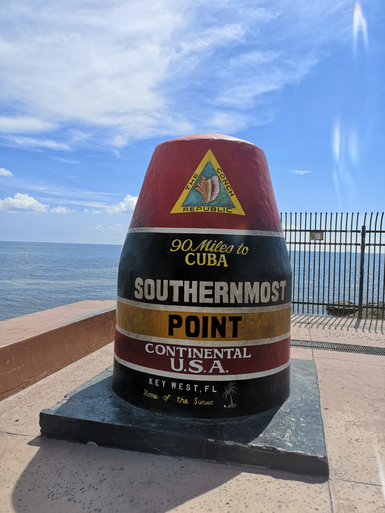

Travel in Miami

In Miami, you can see many rooster statues and paintings all around the corner. Out of my curiosity, I search the meaning of rooster on the Internet. It is very interesting that the rooster is an important symbol in Cuban culture. It represents strength and power and also considered as a compliment for a male to be called a rooster.
Keywest, the southernmost point of the continental United States, which is also the southernmost and westernmost island in the keychain of Florida. The way to Key West from Miami is U.S. Route 1, which I think is the most beautiful route because you can enjoy the amazing view of the sky above the head and the sea on both sides. It really leaves me a deep impression.